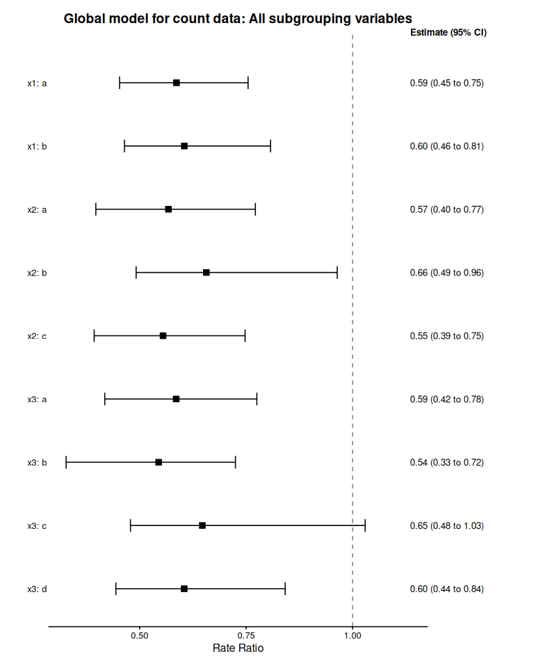
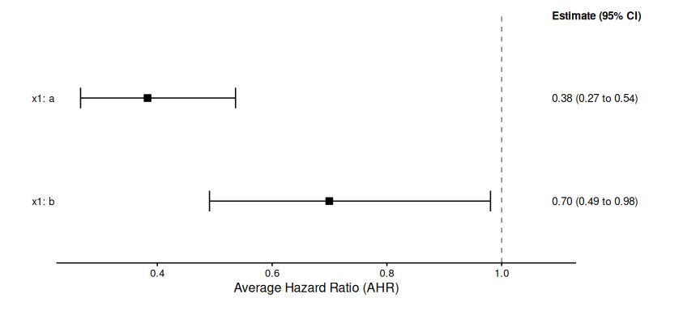

Advanced Functionalities
Miriam Pedrera Gomez, Isaac Gravestock, and Marcel Wolbers
Source:vignettes/Advanced_Functionalities.Rmd
Advanced_Functionalities.RmdThis vignette demonstrates advanced functionalities supported by bonsaiforest2 and the underlying brms package, including adding an offset to negative binomial regression models for counts, customizing prior distributions, and applying stratification to nuisance parameters.
1 Handling Exposure in Count Outcomes with Offsets
For count data, the observed value often depends on the exposure time or follow-up time. Using an offset variable is the standard statistical method to properly account for this time variation by modeling the event rate (count per unit time) instead of the raw count.
In bonsaiforest2, you can include the offset directly in the response_formula using the syntax: count ~ trt + offset(log_fup_duration).
Example 1: Count outcome with offset
The example uses the shrink_data dataset to illustrate a negative binomial model for variable count accounting for treatment trt and the subgrouping variables x1, x2, and x3. Each subject’s follow-up time is provided in variable fup_duration whose log-transformed value is included as an offset.
# Load packages and data
library(bonsaiforest2)
library(brms)
#> Loading required package: Rcpp
#> Loading 'brms' package (version 2.23.0). Useful instructions
#> can be found by typing help('brms'). A more detailed introduction
#> to the package is available through vignette('brms_overview').
#>
#> Attaching package: 'brms'
#> The following object is masked from 'package:stats':
#>
#> ar
shrink_data <- bonsaiforest2::shrink_data
# prepare offset variable
shrink_data$log_fup_duration <- log(shrink_data$fup_duration)
count_model_fit <- run_brms_analysis(
data = shrink_data,
response_type = "count",
response_formula = count ~ trt + offset(log_fup_duration),
unshrunk_terms_formula = ~ 1 + x1 + x2 + x3,
shrunk_predictive_formula = ~ 0 + trt:x1 + trt:x2 + trt:x3,
shrunk_predictive_prior = "horseshoe(scale_global = 1)",
chains = 2, iter = 1000, warmup = 500, cores = 2, refresh = 0, backend = "cmdstanr"
)
#> Step 1: Preparing formula and data...
#>
#> Step 2: Fitting the brms model...
#> Using default priors for unspecified effects:
#> - intercept: brms default
#> - unshrunk terms: brms default
#> Fitting brms model...
#> Start sampling
#> Running MCMC with 2 parallel chains...
#>
#> Chain 1 finished in 3.5 seconds.
#> Chain 2 finished in 3.4 seconds.
#>
#> Both chains finished successfully.
#> Mean chain execution time: 3.4 seconds.
#> Total execution time: 3.6 seconds.
#> Warning: 5 of 1000 (0.0%) transitions ended with a divergence.
#> See https://mc-stan.org/misc/warnings for details.
#> Loading required namespace: rstan
#>
#> Analysis complete.
count_model_summary <- summary_subgroup_effects(brms_fit = count_model_fit)
#> --- Calculating specific subgroup effects... ---
#> Step 1: Identifying subgroups and creating counterfactuals...
#> ...detected subgroup variable(s): x1_onehot, x2_onehot, x3_onehot
#> Step 2: Generating posterior predictions...
#> Step 3: Calculating marginal effects...
#> Done.
plot(count_model_summary, title = "Global model for count data: All subgrouping variables")
#> Preparing data for plotting...
#> Generating plot...
#> Done.
2 Customizing Prior Distributions
In Bayesian analysis, the choice of priors is important and can materially affect the results.
For most settings, the brms default of flat priors for the intercept (intercept_prior) and unshrunk terms (unshrunk_prior, includes the prior for the main treatment effect) are sensible and do not need fine-tuning. However, we recommend that the user carefully considers the prior for shrunken terms, in particular those for covariate-by-treatment interactions (shrunk_predictive_prior).
bonsaiforest2 gives the user full flexibility to specify priors as described via examples below.
The default priors used by bonsaiforest2 are as follows:
| Prior Component | Parameter Name | Default Prior | |
|---|---|---|---|
| Intercept | intercept_prior |
NULL (i.e. brms default) |
|
| Unshrunk Terms | unshrunk_prior |
NULL (i.e. brms default) |
|
| Shrunk Prognostic | shrunk_prognostic_prior |
horseshoe(scale_global = 1); in case the formula specifies random effects (pipe-pipe syntax), automatically uses a normal prior with a half-normal hyperprior with \(\phi=1\) for the standard deviation instead |
|
| Shrunk Predictive | shrunk_predictive_prior |
horseshoe(scale_global = 1); in case the formula specifies random effects (pipe-pipe syntax), automatically uses a normal prior with a half-normal hyperprior with \(\phi=1\) for the standard deviation instead |
The following examples demonstrate how to customize priors in bonsaiforest2. We use the shrink_data package dataset with a time-to-event outcome to show different prior specification strategies, from simple defaults to advanced hierarchical structures.
2.0.1 Model Preparation
# Prepare basic model formulas
prepared_model <- prepare_formula_model(
data = shrink_data,
response_type = "survival",
response_formula = Surv(tt_event, event_yn) ~ trt,
unshrunk_terms_formula = ~ x1 + x2,
shrunk_predictive_formula = ~ 0 + trt:x1
)
#> Response type is 'survival'. Modeling the baseline hazard explicitly using bhaz().Example 2: Using priors directly supported by brms
The simplest approach: use the priors directly supported by brms to adjust priors of different terms.
Below, we assume that the trial targeted a hazard ratio of 0.7, i.e. \(\delta_{plan}=|log(0.7)\), and set scale_global of the regularized horseshoe prior to this value.
fit_ex2 <- fit_brms_model(
prepared_model = prepared_model,
intercept_prior = "normal(0, 5)",
unshrunk_prior = "normal(0, 2.5)",
shrunk_predictive_prior = "horseshoe(scale_global = abs(log(0.7)), scale_slab = 2, df_slab = 4)",
chains = 2, iter = 1000, warmup = 500, cores = 2, refresh = 0, backend = "cmdstanr"
)
#> Fitting brms model...
#> Start sampling
#> Running MCMC with 2 parallel chains...
#>
#> Chain 2 finished in 3.1 seconds.
#> Chain 1 finished in 3.4 seconds.
#>
#> Both chains finished successfully.
#> Mean chain execution time: 3.2 seconds.
#> Total execution time: 3.5 seconds.
#> Warning: 1 of 1000 (0.0%) transitions ended with a divergence.
#> See https://mc-stan.org/misc/warnings for details.
# View the priors that were automatically set
cat("\n=== Priors Used ===\n")
#>
#> === Priors Used ===
print(fit_ex2[["prior"]])
#> prior class
#> horseshoe(scale_global = abs(log(0.7)), scale_slab = 2, df_slab = 4) b
#> horseshoe(scale_global = abs(log(0.7)), scale_slab = 2, df_slab = 4) b
#> horseshoe(scale_global = abs(log(0.7)), scale_slab = 2, df_slab = 4) b
#> normal(0, 2.5) b
#> normal(0, 2.5) b
#> normal(0, 2.5) b
#> normal(0, 2.5) b
#> normal(0, 2.5) b
#> normal(0, 2.5) b
#> dirichlet(1) sbhaz
#> coef group resp dpar nlpar lb ub tag source
#> shpredeffect user
#> trt:x1_onehota shpredeffect (vectorized)
#> trt:x1_onehotb shpredeffect (vectorized)
#> unshrunktermeffect user
#> trt unshrunktermeffect (vectorized)
#> x1a unshrunktermeffect (vectorized)
#> x1b unshrunktermeffect (vectorized)
#> x2b unshrunktermeffect (vectorized)
#> x2c unshrunktermeffect (vectorized)
#> defaultExample 3: Using the R2-D2 shrinkage prior
An alternative global-local shrinkage prior to the regularized horseshoe prior is the R2-D2 prior.
In the linear regression setting, it can be motivated as specifying a prior on the model’s coefficient of determination (\(R^2\)) first, and then distributing the prior through to the coefficients.
The R2-D2 prior is also directly supported by brms as illustrated below.
fit_ex3 <- fit_brms_model(
prepared_model = prepared_model,
shrunk_predictive_prior = "R2D2(mean_R2 = 0.5, prec_R2 = 1)",
chains = 2, iter = 1000, warmup = 500, cores = 2, refresh = 0, backend = "cmdstanr"
)
#> Using default priors for unspecified effects:
#> - unshrunk terms: brms default
#> Fitting brms model...
#> Start sampling
#> Running MCMC with 2 parallel chains...
#>
#> Chain 1 finished in 2.4 seconds.
#> Chain 2 finished in 2.4 seconds.
#>
#> Both chains finished successfully.
#> Mean chain execution time: 2.4 seconds.
#> Total execution time: 2.5 seconds.
#> Warning: 14 of 1000 (1.0%) transitions ended with a divergence.
#> See https://mc-stan.org/misc/warnings for details.
cat("\n=== Priors Used ===\n")
#>
#> === Priors Used ===
print(fit_ex3[["prior"]])
#> prior class coef group resp dpar
#> R2D2(mean_R2 = 0.5, prec_R2 = 1) b
#> R2D2(mean_R2 = 0.5, prec_R2 = 1) b trt:x1_onehota
#> R2D2(mean_R2 = 0.5, prec_R2 = 1) b trt:x1_onehotb
#> (flat) b
#> (flat) b trt
#> (flat) b x1a
#> (flat) b x1b
#> (flat) b x2b
#> (flat) b x2c
#> dirichlet(1) sbhaz
#> nlpar lb ub tag source
#> shpredeffect user
#> shpredeffect (vectorized)
#> shpredeffect (vectorized)
#> unshrunktermeffect default
#> unshrunktermeffect (vectorized)
#> unshrunktermeffect (vectorized)
#> unshrunktermeffect (vectorized)
#> unshrunktermeffect (vectorized)
#> unshrunktermeffect (vectorized)
#> defaultExample 4: Custom hierarchical prior (advanced)
This example demonstrates injecting raw Stan code using stanvars. This is necessary if you want to implement a hierarchical structure that brms does not support natively, such as estimating a shared variance parameter across coefficients.
# 1. Define new hyperparameters in Stan
stanvars_full_hierarchical <- brms::stanvar(
scode = " real mu_pred;\n real<lower=0> sigma_pred;\n",
block = "parameters"
) +
# Add priors for these parameters
brms::stanvar(
scode = " // Priors on the hierarchical parameters\n target += normal_lpdf(mu_pred | 0, 4); \n target += normal_lpdf(sigma_pred | 0, 1) - normal_lccdf(0 | 0, 1); \n",
block = "model"
)
# 2. Create prior that references the Stan variables
prior_full_hierarchical <- brms::set_prior("normal(mu_pred, sigma_pred)")
# 3. Pass both to fit_brms_model
fit_ex4 <- fit_brms_model(
prepared_model = prepared_model,
intercept_prior = "normal(0, 5)",
unshrunk_prior = "normal(0, 2.5)",
shrunk_prognostic_prior = "horseshoe(scale_global = 1)",
shrunk_predictive_prior = prior_full_hierarchical,
stanvars = stanvars_full_hierarchical,
chains = 2, iter = 1000, warmup = 500, cores = 2, refresh = 0, backend = "cmdstanr"
)
#> Fitting brms model...
#> Start sampling
#> Running MCMC with 2 parallel chains...
#>
#> Chain 1 finished in 5.3 seconds.
#> Chain 2 finished in 5.5 seconds.
#>
#> Both chains finished successfully.
#> Mean chain execution time: 5.4 seconds.
#> Total execution time: 5.6 seconds.
# View the used priors
cat("\n=== Priors Used ===\n")
#>
#> === Priors Used ===
print(fit_ex4[["prior"]])
#> prior class coef group resp dpar
#> normal(mu_pred, sigma_pred) b
#> normal(mu_pred, sigma_pred) b trt:x1_onehota
#> normal(mu_pred, sigma_pred) b trt:x1_onehotb
#> normal(0, 2.5) b
#> normal(0, 2.5) b trt
#> normal(0, 2.5) b x1a
#> normal(0, 2.5) b x1b
#> normal(0, 2.5) b x2b
#> normal(0, 2.5) b x2c
#> dirichlet(1) sbhaz
#> nlpar lb ub tag source
#> shpredeffect user
#> shpredeffect (vectorized)
#> shpredeffect (vectorized)
#> unshrunktermeffect user
#> unshrunktermeffect (vectorized)
#> unshrunktermeffect (vectorized)
#> unshrunktermeffect (vectorized)
#> unshrunktermeffect (vectorized)
#> unshrunktermeffect (vectorized)
#> default
print(fit_ex4[["stanvars"]])
#> [[1]]
#> [[1]]$name
#> [1] ""
#>
#> [[1]]$sdata
#> NULL
#>
#> [[1]]$scode
#> [1] " real mu_pred;\n real<lower=0> sigma_pred;\n"
#>
#> [[1]]$block
#> [1] "parameters"
#>
#> [[1]]$position
#> [1] "start"
#>
#> [[1]]$pll_args
#> character(0)
#>
#>
#> [[2]]
#> [[2]]$name
#> [1] ""
#>
#> [[2]]$sdata
#> NULL
#>
#> [[2]]$scode
#> [1] " // Priors on the hierarchical parameters\n target += normal_lpdf(mu_pred | 0, 4); \n target += normal_lpdf(sigma_pred | 0, 1) - normal_lccdf(0 | 0, 1); \n"
#>
#> [[2]]$block
#> [1] "model"
#>
#> [[2]]$position
#> [1] "start"
#>
#> [[2]]$pll_args
#> character(0)
#>
#>
#> attr(,"class")
#> [1] "stanvars"Example 5: Coefficient-specific priors
By default, bonsaiforest2 uses the same prior for all coefficients assigned to the group of “unshrunken terms”, “shrunken prognostic terms”, or “shrunken predictive terms”, respectively. However, it is possible to fine-tune this by assigning a different prior to one or several coefficients within a group.
The example below illustrates this. It includes the interaction trt*x3 as an “unshrunken term” and assigns a tighter prior to the regression coefficients for trt:x3b, trt:x3c, and trt:x3d, respectively, compared to other coefficients in the same group.
To implement this, we first call prepare_formula_model() to extract the exact coefficient names that will be included in the model.
Then, we define coefficient-specific priors for these by combining brms::set_prior calls.
# 1. Run prepare_formula_model
prepared_model_ex5 <- prepare_formula_model(
data = shrink_data,
response_type = "survival",
response_formula = Surv(tt_event, event_yn) ~ trt,
unshrunk_terms_formula = ~ x1 + trt*x3,
shrunk_predictive_formula = ~ 0 + trt:x1,
)
#> Response type is 'survival'. Modeling the baseline hazard explicitly using bhaz().
# 2. Inspect the Results
# A. The generated brms formula object
print(prepared_model_ex5$formula)
#> tt_event | cens(1 - event_yn) + bhaz(Boundary.knots = c(0, 60.500476574435), knots = c(14.0610682872923, 36.1959635027271, 46.047044984117), intercept = FALSE) ~ unshrunktermeffect + shpredeffect
#> unshrunktermeffect ~ 0 + x1 + trt * x3 + trt
#> shpredeffect ~ 0 + trt:x1_onehot
# B. The processed terms
print(prepared_model_ex5$stan_variable_names$X_unshrunktermeffect)
#> [1] "x1a" "x1b" "trt" "x3b" "x3c" "x3d" "trt:x3b"
#> [8] "trt:x3c" "trt:x3d"
cat("=== Prior Strategy ===\n")
#> === Prior Strategy ===
cat("General unshrunk prior: normal(0, 5)\n")
#> General unshrunk prior: normal(0, 5)
cat("Specific for trt:x3 interactions: normal(0, 1)\n\n")
#> Specific for trt:x3 interactions: normal(0, 1)
# Create combined prior object
# IMPORTANT: Use EXACT coefficient names from the prepared data
unshrunk_priors_combined <- c(
brms::set_prior("normal(0, 5)", class = "b"), # General
brms::set_prior("normal(0, 1)", class = "b", coef = "trt:x3b"),
brms::set_prior("normal(0, 1)", class = "b", coef = "trt:x3c"),
brms::set_prior("normal(0, 1)", class = "b", coef = "trt:x3d")
)
# Fit the model
fit_ex5 <- fit_brms_model(
prepared_model = prepared_model_ex5,
intercept_prior = "normal(0, 5)",
unshrunk_prior = unshrunk_priors_combined, # Pass the combined object
shrunk_predictive_prior = "horseshoe(scale_global = 1)",
chains = 2, iter = 1000, warmup = 500, cores = 2, refresh = 0, backend = "cmdstanr"
)
#> Fitting brms model...
#> Start sampling
#> Running MCMC with 2 parallel chains...
#>
#> Chain 2 finished in 3.5 seconds.
#> Chain 1 finished in 4.0 seconds.
#>
#> Both chains finished successfully.
#> Mean chain execution time: 3.7 seconds.
#> Total execution time: 4.1 seconds.
#> Warning: 2 of 1000 (0.0%) transitions ended with a divergence.
#> See https://mc-stan.org/misc/warnings for details.
# View the used priors
cat("\n=== Priors Used ===\n")
#>
#> === Priors Used ===
print(fit_ex5[["prior"]])
#> prior class coef group resp dpar
#> horseshoe(scale_global = 1) b
#> horseshoe(scale_global = 1) b trt:x1_onehota
#> horseshoe(scale_global = 1) b trt:x1_onehotb
#> normal(0, 5) b
#> normal(0, 5) b trt
#> normal(0, 1) b trt:x3b
#> normal(0, 1) b trt:x3c
#> normal(0, 1) b trt:x3d
#> normal(0, 5) b x1a
#> normal(0, 5) b x1b
#> normal(0, 5) b x3b
#> normal(0, 5) b x3c
#> normal(0, 5) b x3d
#> dirichlet(1) sbhaz
#> nlpar lb ub tag source
#> shpredeffect user
#> shpredeffect (vectorized)
#> shpredeffect (vectorized)
#> unshrunktermeffect user
#> unshrunktermeffect (vectorized)
#> unshrunktermeffect user
#> unshrunktermeffect user
#> unshrunktermeffect user
#> unshrunktermeffect (vectorized)
#> unshrunktermeffect (vectorized)
#> unshrunktermeffect (vectorized)
#> unshrunktermeffect (vectorized)
#> unshrunktermeffect (vectorized)
#> defaultExample 6: Hierarchical priors with shared variance (stanvars)
Create correlated priors by sharing a common variance parameter estimated from the data. This is sensible when you believe treatment effects across subgroups are exchangeable and want to borrow information across them.
cat("\n=== Hierarchical Prior Structure ===\n")
#>
#> === Hierarchical Prior Structure ===
cat("Instead of independent priors per coefficient, we pool information through a shared scale:\n")
#> Instead of independent priors per coefficient, we pool information through a shared scale:
cat(" tau ~ half-normal(0, 1) [shared scale parameter]\n")
#> tau ~ half-normal(0, 1) [shared scale parameter]
cat(" beta_i ~ N(0, tau) for each coefficient i\n")
#> beta_i ~ N(0, tau) for each coefficient i
cat("This creates exchangeability: we assume coefficients are similar but with adaptive variation.\n\n")
#> This creates exchangeability: we assume coefficients are similar but with adaptive variation.
# Step 1: Declare tau as a parameter to be estimated
tau_parameter <- brms::stanvar(
scode = " real<lower=0> biomarker_tau; // Shared scale parameter\n",
block = "parameters"
)
# Step 2: Add prior for tau (using normal truncated to positive values with constraint)
tau_prior <- brms::stanvar(
scode = " biomarker_tau ~ normal(0, 1); // Hyperprior on the scale\n",
block = "model"
)
# Combine stanvars
hierarchical_stanvars <- tau_parameter + tau_prior
# Step 3: Create priors referencing the shared variance parameter
# Note: We identified these coefficient names using prepare_formula_model above
unshrunk_priors_hier <- c(
brms::set_prior("normal(0, 5)", class = "b"), # General
brms::set_prior("normal(0, biomarker_tau)", class = "b", coef = "trt:x3b"),
brms::set_prior("normal(0, biomarker_tau)", class = "b", coef = "trt:x3c"),
brms::set_prior("normal(0, biomarker_tau)", class = "b", coef = "trt:x3d")
)
# Step 4: Fit the hierarchical model
fit_ex6 <- fit_brms_model(
prepared_model = prepared_model_ex5,
intercept_prior = "normal(0, 5)",
unshrunk_prior = unshrunk_priors_hier,
shrunk_predictive_prior = "horseshoe(scale_global = 1)",
stanvars = hierarchical_stanvars,
chains = 2, iter = 1000, warmup = 500, cores = 2, refresh = 0, backend = "cmdstanr"
)
# View the used priors
cat("\n=== Priors Used ===\n")
print(fit_ex6[["prior"]])
print(fit_ex6[["stanvars"]])3 Stratification for nuisance parameters
Stratified models which assume different residual variances (continuous endpoints), overdispersion parameters (count endpoints), or baseline hazards (time-to-event endpoints) across strata are also supported in bonsaiforest2 (via brms). The argument stratification_formula defines the grouping factor(s).
Example 7: Fully stratified continuous one-way shrinkage model
We fit a one-way model for the continuous outcome y in shrink_data with subgroups defined by the binary covariate x1 with adjustment for x2 and x3 as prognostic factors.
In the model specification below, we assume separate regression coefficients for x2 and x3, respectively, across strata defined by x1 (specified via interaction terms x1*x2 and x1*x3) as well as different residual variances across strata (specified via argument stratification_formula). The only parameter that is shared across strata is the shrinkage parameter for treatment effect heterogeneity.
# model with x1*x2 and x1*x3 (separate regression coef per level of x1 for x2 and x3), and separate variance per x1 strata
oneway_x1_flex_strat <- run_brms_analysis(
data = shrink_data,
response_type = "continuous",
response_formula = y ~ trt,
stratification_formula = ~ x1,
unshrunk_terms_formula = ~ x1 + x1*x2 + x1*x3,
shrunk_predictive_formula = ~ (0 + trt || x1),
shrunk_predictive_prior = set_prior("normal(0, 0.3)", class = "sd"),
chains = 2, iter = 2000, warmup = 1000, cores = 2,
refresh = 0, backend = "cmdstanr"
)
#> Step 1: Preparing formula and data...
#> Applying stratification: estimating sigma by 'x1'.
#>
#> Step 2: Fitting the brms model...
#> Using default priors for unspecified effects:
#> - intercept: brms default
#> - unshrunk terms: brms default
#> Fitting brms model...
#> Start sampling
#> Running MCMC with 2 parallel chains...
#>
#> Chain 2 finished in 4.0 seconds.
#> Chain 1 finished in 4.2 seconds.
#>
#> Both chains finished successfully.
#> Mean chain execution time: 4.1 seconds.
#> Total execution time: 4.3 seconds.
#>
#> Analysis complete.
summary_oneway_x1_flex_strat <- summary_subgroup_effects(
brms_fit = oneway_x1_flex_strat
)
#> --- Calculating specific subgroup effects... ---
#> Step 1: Identifying subgroups and creating counterfactuals...
#> ...detected subgroup variable(s): x1
#> Step 2: Generating posterior predictions...
#> Step 3: Calculating marginal effects...
#> Done.
print(summary_oneway_x1_flex_strat$estimates)
#> # A tibble: 2 × 4
#> Subgroup Median CI_Lower CI_Upper
#> <chr> <dbl> <dbl> <dbl>
#> 1 x1: a 0.496 0.260 0.726
#> 2 x1: b 0.126 -0.199 0.429Example 8: Stratified one-way survival model
Assume that the primary analysis of the trial was stratified by variable x2.
A corresponding one-way model for x1 which uses a Cox model stratified by x2 is fitted below.
# Model fitting with stratified baseline hazard
fit_surv_oneway_x1_strat <- run_brms_analysis(
data = shrink_data,
response_type = "survival",
response_formula = Surv(tt_event, event_yn) ~ trt,
stratification_formula = ~ x2,
unshrunk_terms_formula = ~ x1 + x3,
shrunk_predictive_formula = ~ (0 + trt || x1),
shrunk_predictive_prior = set_prior("normal(0, abs(log(0.7)))", class = "sd"),
chains = 2, iter = 1000, warmup = 500, cores = 2, refresh = 0, backend = "cmdstanr"
)
#> Step 1: Preparing formula and data...
#> Response type is 'survival'. Modeling the baseline hazard explicitly using bhaz().
#> Applying stratification: estimating separate baseline hazards by 'x2'.
#>
#> Step 2: Fitting the brms model...
#> Using default priors for unspecified effects:
#> - unshrunk terms: brms default
#> Fitting brms model...
#> Start sampling
#> Running MCMC with 2 parallel chains...
#>
#> Chain 2 finished in 3.7 seconds.
#> Chain 1 finished in 3.9 seconds.
#>
#> Both chains finished successfully.
#> Mean chain execution time: 3.8 seconds.
#> Total execution time: 4.0 seconds.
#>
#> Analysis complete.
summary_surv_oneway_x1_strat <- summary_subgroup_effects(fit_surv_oneway_x1_strat)
#> --- Calculating specific subgroup effects... ---
#> Step 1: Identifying subgroups and creating counterfactuals...
#> ...detected subgroup variable(s): x1
#> Step 2: Generating posterior predictions...
#> Warning: Dropping 'draws_df' class as required metadata was removed.
#> Warning: Dropping 'draws_df' class as required metadata was removed.
#> Warning: Dropping 'draws_df' class as required metadata was removed.
#> Step 3: Calculating marginal effects...
#> Done.
print(summary_surv_oneway_x1_strat$estimates)
#> # A tibble: 2 × 4
#> Subgroup Median CI_Lower CI_Upper
#> <chr> <dbl> <dbl> <dbl>
#> 1 x1: a 0.383 0.266 0.536
#> 2 x1: b 0.700 0.491 0.980
plot(summary_surv_oneway_x1_strat)
#> Preparing data for plotting...
#> Generating plot...
#> Done.
4 Summary
This vignette demonstrated several advanced functionalities supported by bonsaiforest2:
- Offset variables for count outcomes with varying exposure times
- Custom prior specification with flexible prior constraints
- Stratification for nuisance parameters that vary across groups
These features provide researchers with powerful tools for complex trial analyses while maintaining the principled Bayesian shrinkage framework.